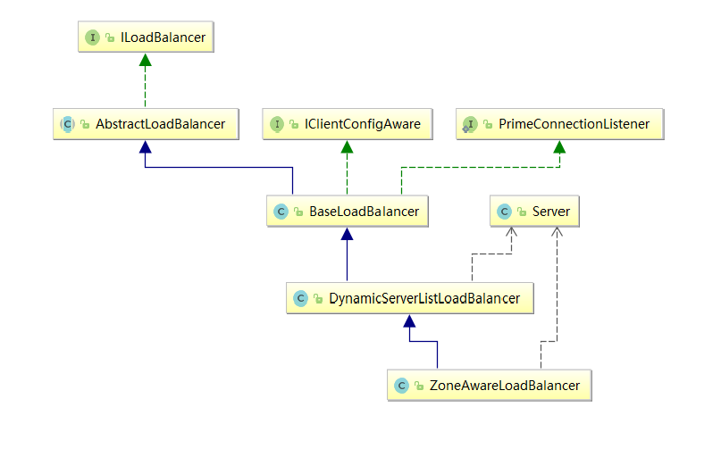

我们已经知道使用@LoadBalanced注解，注解到RestTemplate就可以实现Ribbon客户端的负载均衡，那么这是为什么呢？
首先我们查看@LoadBalanced注解的源码，源码如下：
package org.springframework.cloud.client.loadbalancer;
import org.springframework.beans.factory.annotation.Qualifier;
import java.lang.annotation.Documented;
import java.lang.annotation.ElementType;
import java.lang.annotation.Inherited;
import java.lang.annotation.Retention;
import java.lang.annotation.RetentionPolicy;
import java.lang.annotation.Target;
/**
* Annotation to mark a RestTemplate bean to be configured to use a LoadBalancerClient
* @author Spencer Gibb
*/
@Target({ ElementType.FIELD, ElementType.PARAMETER, ElementType.METHOD })
@Retention(RetentionPolicy.RUNTIME)
@Documented
@Inherited
@Qualifier
public @interface LoadBalanced {
}
根据上述注释
/**
* Annotation to mark a RestTemplate bean to be configured to use a LoadBalancerClient
* @author Spencer Gibb
*/
我们可以看到标记了这个注解的RestTemplate bean都会被使用LoadBalanceClient进行配置。
那么下面我们去查看LoadBalanceClient类，源码如下：
/**
* Represents a client side load balancer
* @author Spencer Gibb
*/
public interface LoadBalancerClient {
/**
* Choose a ServiceInstance from the LoadBalancer for the specified service
* @param serviceId the service id to look up the LoadBalancer
* @return a ServiceInstance that matches the serviceId
*/
ServiceInstance choose(String serviceId);
/**
* execute request using a ServiceInstance from the LoadBalancer for the specified
* service
* @param serviceId the service id to look up the LoadBalancer
* @param request allows implementations to execute pre and post actions such as
* incrementing metrics
* @return the result of the LoadBalancerRequest callback on the selected
* ServiceInstance
*/
<T> T execute(String serviceId, LoadBalancerRequest<T> request) throws IOException;
/**
* Create a proper URI with a real host and port for systems to utilize.
* Some systems use a URI with the logical serivce name as the host,
* such as http://myservice/path/to/service. This will replace the
* service name with the host:port from the ServiceInstance.
* @param instance
* @param original a URI with the host as a logical service name
* @return a reconstructed URI
*/
URI reconstructURI(ServiceInstance instance, URI original);
}
我们看到LoadBalancerClient是一个接口，该接口拥有三个方法，分别是下面3个：
LoadBalancer中选择一个特定的实例。ServiceInstance去为指定的服务实现请求。ServiceInstance对象是带有host和port的具体服务实例，而后者URI对象则是使用逻辑服务名定义为host的URI,而返回的URI内容则是通过ServiceInstance的服务实例详情拼接出具体的host:post形式的请求地址。通过类图我们可知LoadBalancerAutoConfiguration实现客户端复杂均衡器的自动化配置。源码如下：
/**
* Auto configuration for Ribbon (client side load balancing).
*
* @author Spencer Gibb
* @author Dave Syer
*/
@Configuration
@ConditionalOnClass(RestTemplate.class)
@ConditionalOnBean(LoadBalancerClient.class)
public class LoadBalancerAutoConfiguration {
@LoadBalanced
@Autowired(required = false)
private List<RestTemplate> restTemplates = Collections.emptyList();
@Bean
public SmartInitializingSingleton loadBalancedRestTemplateInitializer(
final List<RestTemplateCustomizer> customizers) {
return new SmartInitializingSingleton() {
@Override
public void afterSingletonsInstantiated() {
for (RestTemplate restTemplate : LoadBalancerAutoConfiguration.this.restTemplates) {
for (RestTemplateCustomizer customizer : customizers) {
customizer.customize(restTemplate);
}
}
}
};
}
@Bean
@ConditionalOnMissingBean
public RestTemplateCustomizer restTemplateCustomizer(
final LoadBalancerInterceptor loadBalancerInterceptor) {
return new RestTemplateCustomizer() {
@Override
public void customize(RestTemplate restTemplate) {
List<ClientHttpRequestInterceptor> list = new ArrayList<>(
restTemplate.getInterceptors());
list.add(loadBalancerInterceptor);
restTemplate.setInterceptors(list);
}
};
}
@Bean
public LoadBalancerInterceptor ribbonInterceptor(
LoadBalancerClient loadBalancerClient) {
return new LoadBalancerInterceptor(loadBalancerClient);
}
}
LoadBalancerAutoConfiguration上被如下注解标记：
@ConditionalOnClass(RestTemplate.class)
@ConditionalOnBean(LoadBalancerClient.class)
这要求RestTemplate类必须存在于当前工程环境中，Spring的bean工程中必须有LoadBalancerClient的实现bean。
同时该类具有三个方法,这个类要由下往上看：
LoadBalancerInterceptor的bean。对客户端的请求发出拦截,进行负载均衡。RestTemplate添加LoadBalancerInterceptor拦截器进行拦截。LoadBanlanced注释修饰的RestTemplate列表,并在此进行初始化，以及调用上述两个方法添加拦截器。那么下面我们查看被添加的LoadBalancerInterceptor拦截器的源码：
public class LoadBalancerInterceptor implements ClientHttpRequestInterceptor {
private LoadBalancerClient loadBalancer;
public LoadBalancerInterceptor(LoadBalancerClient loadBalancer) {
this.loadBalancer = loadBalancer;
}
@Override
public ClientHttpResponse intercept(final HttpRequest request, final byte[] body,
final ClientHttpRequestExecution execution) throws IOException {
final URI originalUri = request.getURI();
String serviceName = originalUri.getHost();
return this.loadBalancer.execute(serviceName,
new LoadBalancerRequest<ClientHttpResponse>() {
@Override
public ClientHttpResponse apply(final ServiceInstance instance)
throws Exception {
HttpRequest serviceRequest = new ServiceRequestWrapper(request,
instance);
return execution.execute(serviceRequest, body);
}
});
}
private class ServiceRequestWrapper extends HttpRequestWrapper {
private final ServiceInstance instance;
public ServiceRequestWrapper(HttpRequest request, ServiceInstance instance) {
super(request);
this.instance = instance;
}
@Override
public URI getURI() {
URI uri = LoadBalancerInterceptor.this.loadBalancer.reconstructURI(
this.instance, getRequest().getURI());
return uri;
}
}
}
当用户请求进入后，都会被LoadBalancerInterceptor所拦截，然后交给intercept函数所拦截，然后从其中取出serviceName,交由LoadBalanceClient执行execute函数，进行处理，即调用如下方法：
@Override
public ClientHttpResponse intercept(final HttpRequest request, final byte[] body,
final ClientHttpRequestExecution execution) throws IOException {
final URI originalUri = request.getURI();
String serviceName = originalUri.getHost();
return this.loadBalancer.execute(serviceName,
new LoadBalancerRequest<ClientHttpResponse>() {
@Override
public ClientHttpResponse apply(final ServiceInstance instance)
throws Exception {
HttpRequest serviceRequest = new ServiceRequestWrapper(request,
instance);
return execution.execute(serviceRequest, body);
}
});
}
首先通过
final URI originalUri = request.getURI();
String serviceName = originalUri.getHost();
获取到serviceName，然后构建一个LoadBalancerRequest()并实现其apply(ServiceInstance instance)方法，我们在apply()方法中，创建了一个ServiceRequestWrapper，查看该类源码：
private class ServiceRequestWrapper extends HttpRequestWrapper {
private final ServiceInstance instance;
public ServiceRequestWrapper(HttpRequest request, ServiceInstance instance) {
super(request);
this.instance = instance;
}
@Override
public URI getURI() {
URI uri = LoadBalancerInterceptor.this.loadBalancer.reconstructURI(
this.instance, getRequest().getURI());
return uri;
}
}
这里的getURI()方法就是使用的LoadBalancerClient的
这里的 loadBalancer使用的是RibbonLoadBalancerClient(org.springframework.cloud.netflix.ribbon包中),调用其中execute(....)方法，方法源码如下：
@Override
public <T> T execute(String serviceId, LoadBalancerRequest<T> request) throws IOException {
ILoadBalancer loadBalancer = getLoadBalancer(serviceId);
Server server = getServer(loadBalancer);
if (server == null) {
throw new IllegalStateException("No instances available for " + serviceId);
}
RibbonServer ribbonServer = new RibbonServer(serviceId, server, isSecure(server,
serviceId), serverIntrospector(serviceId).getMetadata(server));
RibbonLoadBalancerContext context = this.clientFactory
.getLoadBalancerContext(serviceId);
RibbonStatsRecorder statsRecorder = new RibbonStatsRecorder(context, server);
try {
T returnVal = request.apply(ribbonServer);
statsRecorder.recordStats(returnVal);
return returnVal;
}
// catch IOException and rethrow so RestTemplate behaves correctly
catch (IOException ex) {
statsRecorder.recordStats(ex);
throw ex;
}
catch (Exception ex) {
statsRecorder.recordStats(ex);
ReflectionUtils.rethrowRuntimeException(ex);
}
return null;
}
执行过程中，首先通过getLoadBalancer(serviceId)获取与名称相关的负载均衡器。然后通过getServer(loadBalancer)获取Server实例，该方法中调用了loadBalancer的chooseServer()方法，负载均衡选择server实例。选择完实例后使用构造器(new RibbonServer(serviceId, server, isSecure(server,serviceId), serverIntrospector(serviceId).getMetadata(server)))获取RibbonServer,该对象表示发现系统的服务实例。需要serviceId,server实例，以及是否安全和元数据。其中isSecure(server,serviceId)用来判断是否安全，源码如下：
private boolean isSecure(Server server, String serviceId) {
IClientConfig config = this.clientFactory.getClientConfig(serviceId);
if (config != null) {
Boolean isSecure = config.get(CommonClientConfigKey.IsSecure);
if (isSecure != null) {
return isSecure;
}
}
return serverIntrospector(serviceId).isSecure(server);
}
SpringClientFactory类是一个用来创建客户端负载均衡器的工厂类，该工厂会为每一个不同名的ribbon客户端生成不同的Spring上下文。
该方法首先获取IClientConfig，该类定义各种API用于初始化客户端的客户端配置 。如果配置不为空，那么就获取配置中的IsSecure信息来进行判断，如果isSecure属性为空，那么就调用serverIntrospector(serviceId).isSecure(server)该方法。serverIntrospector()方法如下：
private ServerIntrospector serverIntrospector(String serviceId) {
ServerIntrospector serverIntrospector = this.clientFactory.getInstance(serviceId,
ServerIntrospector.class);
if (serverIntrospector == null) {
serverIntrospector = new DefaultServerIntrospector();
}
return serverIntrospector;
}
首先我们获取ServerIntrospector，该接口如下：
public interface ServerIntrospector {
boolean isSecure(Server server);
Map<String, String> getMetadata(Server server);
}
通过接口我们知道，该对象可以获取服务器是否安全，以及相关的元数据，达到特定效果。如果，获取不到ServerIntrospector，那么就自己建造一个，源码如下：
public class DefaultServerIntrospector implements ServerIntrospector {
@Override
public boolean isSecure(Server server) {
// Can we do better?
return (""+server.getPort()).endsWith("443");
}
@Override
public Map<String, String> getMetadata(Server server) {
return Collections.emptyMap();
}
}
根据源码我们知道，该对象的isSecure(Server server)方法判断逻辑是，返回服务器端口号是否以443结尾，而元数据则是空Map。
然后继续调用isSecure()方法，笔者这里是获取了EurekaServerIntrospector对象，而该对象的源码如下：
public class EurekaServerIntrospector extends DefaultServerIntrospector {
@Override
public boolean isSecure(Server server) {
if (server instanceof DiscoveryEnabledServer) {
DiscoveryEnabledServer discoveryServer = (DiscoveryEnabledServer) server;
return discoveryServer.getInstanceInfo().isPortEnabled(InstanceInfo.PortType.SECURE);
}
return super.isSecure(server);
}
@Override
public Map<String, String> getMetadata(Server server) {
if (server instanceof DiscoveryEnabledServer) {
DiscoveryEnabledServer discoveryServer = (DiscoveryEnabledServer) server;
return discoveryServer.getInstanceInfo().getMetadata();
}
return super.getMetadata(server);
}
}
可以看到，该类继承了上面所说的DefaultServerIntrospector,名字为EurekaServerIntrospector，这样该类是做什么的就很明显了。isSecure(Server)方法首先将server转化成DiscoveryEnableServer对象，然后调用其getInstanceInfo().isPortEnabled(InstanceInfo.PortType.SECURE)进行判断。对此，此时我们查看DiscoveryEnableServer源码注释可以看到：
/**
* Servers that were obtained via Discovery and hence contain
* meta data in the form of InstanceInfo
* @author stonse
*
*/
该类是通过发现获取的Servers，并且包含了元数据。而这个InstanceInfo，就是各种元数据已经开放端口等。InstanceInfo类源码注释如下：
/**
* The class that holds information required for registration with
* <tt>Eureka Server</tt> and to be discovered by other components.
* <p>
* <code>@Auto</code> annotated fields are serialized as is; Other fields are
* serialized as specified by the <code>@Serializer</code>.
* </p>
*
* @author Karthik Ranganathan, Greg Kim
*/
此处笔者不再赘述，到这里，isSecure()方法的逻辑已经完全解释清楚。剩下的serverIntrospector(serviceId).getMetadata(server)也就清楚了，到这里就获得了一个RibbonServer对象。
接下来我们需要获取一个RibbonLoadBalancerContext类的属性，
RibbonLoadBalancerContext类是LoadBalancerContext的子类，该类用于存储一些被负载均衡器使用的上下文内容和Api操作（reconstructURIWithServer就是其中之一）。即:
RibbonLoadBalancerContext context = this.clientFactory
.getLoadBalancerContext(serviceId);
最后获取一个RibbonStatsRecorder对服务的请求还进行了跟踪记录.
RibbonStatsRecorder statsRecorder = new RibbonStatsRecorder(context, server);
然后调用如下方法对服务提供端进行调用:
T returnVal = request.apply(ribbonServer);
返回消息后进行记录,并返回结果.
statsRecorder.recordStats(returnVal);
return returnVal;
那么现在我们来分析下 request.apply(ribbonServer);这个方法.调用该方法的对象是ClientHttpRequestExecution类的对象,我们查看该类的源码:
/**
* Represents the context of a client-side HTTP request execution.
*
* <p>Used to invoke the next interceptor in the interceptor chain,
* or - if the calling interceptor is last - execute the request itself.
*
* @author Arjen Poutsma
* @since 3.1
* @see ClientHttpRequestInterceptor
*/
public interface ClientHttpRequestExecution {
/**
* Execute the request with the given request attributes and body,
* and return the response.
* @param request the request, containing method, URI, and headers
* @param body the body of the request to execute
* @return the response
* @throws IOException in case of I/O errors
*/
ClientHttpResponse execute(HttpRequest request, byte[] body) throws IOException;
}
可以看到ClientHttpRequestExecution是一个接口。该接口用来实现客户端的http请求的执行。被用来去调用拦截器链中下一个拦截器，如果要被调用的拦截器是最后一个，那么执行请求。实现类源码如下：
private class InterceptingRequestExecution implements ClientHttpRequestExecution {
private final Iterator<ClientHttpRequestInterceptor> iterator;
public InterceptingRequestExecution() {
this.iterator = interceptors.iterator();
}
@Override
public ClientHttpResponse execute(HttpRequest request, final byte[] body) throws IOException {
if (this.iterator.hasNext()) {
ClientHttpRequestInterceptor nextInterceptor = this.iterator.next();
return nextInterceptor.intercept(request, body, this);
}
else {
ClientHttpRequest delegate = requestFactory.createRequest(request.getURI(), request.getMethod());
for (Map.Entry<String, List<String>> entry : request.getHeaders().entrySet()) {
List<String> values = entry.getValue();
for (String value : values) {
delegate.getHeaders().add(entry.getKey(), value);
}
}
if (body.length > 0) {
if (delegate instanceof StreamingHttpOutputMessage) {
StreamingHttpOutputMessage streamingOutputMessage = (StreamingHttpOutputMessage) delegate;
streamingOutputMessage.setBody(new StreamingHttpOutputMessage.Body() {
@Override
public void writeTo(final OutputStream outputStream) throws IOException {
StreamUtils.copy(body, outputStream);
}
});
}
else {
StreamUtils.copy(body, delegate.getBody());
}
}
return delegate.execute();
}
}
}
考察源码的execute()方法，首先寻找下一个拦截器，如果有下一个，则获取拦截器，并执行。否则，通过ClientHttpRequestFactory的createRequest(request.getURI(), request.getMethod())方法获取特定的ClientHttpRequest。然后将头信息和body信息放入到ClientHttpRequest，然后调用execute()方法进行执行请求调用。
通过一番分析，我们知道了，当一个请求需要调用别的服务的方法时，首先被LoadBalancerInterceptor拦截器所拦截，然后调用其intercept方法。然后，获取URI和ServiceName，之后交给RibbonLoadBalancerClient进行处理，处理过程中，先获取负载均衡器ILoadBalancer，之后 通过负载均衡器获取Server实例，之后将Server实例包装成RibbonServer,并加载RibbonBalancerContext，获取RibbonStatsRecorder,之后调用传入的request的applyf()方法，方法参数传入包装好的RibbonLoadBalancerClient，该方法将继续执行拦截器链中的实例，如果没有拦截器了，将自己远程调用其它服务的方法，并返回结果。最后交由RibbonStatsRecorder记录下调用历史数据。
那么我们知道，负载均衡器就是在RibbonLoadBalancerClient中的execute(String serviceId,LoadBalancerRequest<T> request)方法中的getLoadBalancer(serviceId)方法获得的，那么这个负载均衡器是怎么获得的呢？我们考察该方法的源码：
protected ILoadBalancer getLoadBalancer(String serviceId) {
return this.clientFactory.getLoadBalancer(serviceId);
}
该方法显而易见，是由SpringClientFactory获取一个负载均衡器实例，那么SpringClientFactory是怎么获取的呢？
public ILoadBalancer getLoadBalancer(String name) {
return getInstance(name, ILoadBalancer.class);
}
我们看到它获取的就是一个ILoadBalancer类型的实例。该类型又是什么呢？我们查看源码发现：
/**
* Interface that defines the operations for a software loadbalancer. A typical
* loadbalancer minimally need a set of servers to loadbalance for, a method to
* mark a particular server to be out of rotation and a call that will choose a
* server from the existing list of server.
*
* @author stonse
*
*/
public interface ILoadBalancer {
/**
* Initial list of servers.
* This API also serves to add additional ones at a later time
* The same logical server (host:port) could essentially be added multiple times
* (helpful in cases where you want to give more "weightage" perhaps ..)
*
* @param newServers new servers to add
*/
public void addServers(List<Server> newServers);
/**
* Choose a server from load balancer.
*
* @param key An object that the load balancer may use to determine which server to return. null if
* the load balancer does not use this parameter.
* @return server chosen
*/
public Server chooseServer(Object key);
/**
* To be called by the clients of the load balancer to notify that a Server is down
* else, the LB will think its still Alive until the next Ping cycle - potentially
* (assuming that the LB Impl does a ping)
*
* @param server Server to mark as down
*/
public void markServerDown(Server server);
/**
* @deprecated 2016-01-20 This method is deprecated in favor of the
* cleaner {@link #getReachableServers} (equivalent to availableOnly=true)
* and {@link #getAllServers} API (equivalent to availableOnly=false).
*
* Get the current list of servers.
*
* @param availableOnly if true, only live and available servers should be returned
*/
@Deprecated
public List<Server> getServerList(boolean availableOnly);
/**
* @return Only the servers that are up and reachable.
*/
public List<Server> getReachableServers();
/**
* @return All known servers, both reachable and unreachable.
*/
public List<Server> getAllServers();
}
我们看到这家伙是一个接口，该接口的注释描述到该接口定义了一个软件负载均衡器的操作，典型的负载均衡器最低限度地需要一组服务器来进行负载均衡,一个标记服务器不可用的方法和从已知服务器中选择一个可用的服务器的调用。该接口要求实现6个方法，其中一个已经不推荐了，分别如下：
其中ILoadBalancer接口的继承关系如下：

BaseLoadBalancer实现了基础的负载均衡，而DynamicServerListLoadBalancer和ZoneAwareLoadBalancer提供了扩展。那么我们默认使用的是哪个ILoadBalancer呢？
我们考察RibbonClientConfiguration,考察其源码，发现：
@Bean
@ConditionalOnMissingBean
public ILoadBalancer ribbonLoadBalancer(IClientConfig config,
ServerList<Server> serverList, ServerListFilter<Server> serverListFilter,
IRule rule, IPing ping) {
ZoneAwareLoadBalancer<Server> balancer = LoadBalancerBuilder.newBuilder()
.withClientConfig(config).withRule(rule).withPing(ping)
.withServerListFilter(serverListFilter).withDynamicServerList(serverList)
.buildDynamicServerListLoadBalancer();
return balancer;
}
其将ZoneAwareLoadBalancer放入到了Spring bean容器中。默认取到的就是这个Bean。
自此，所有逻辑全部理清。